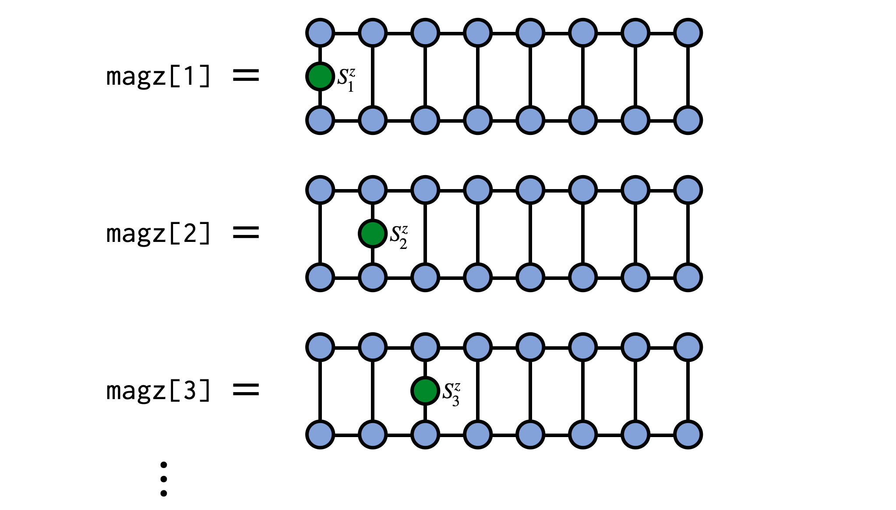
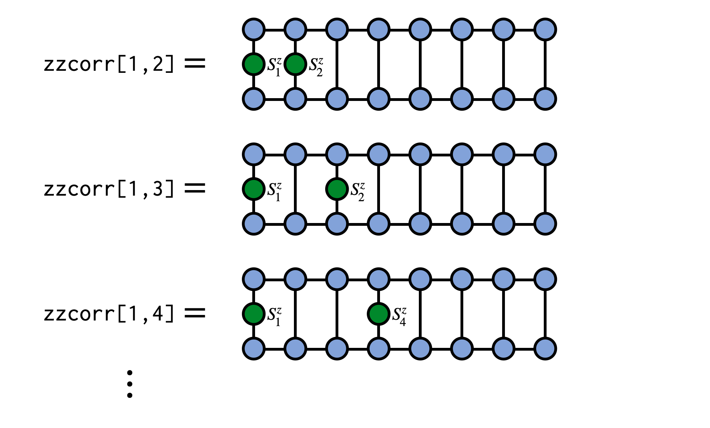

MPS and MPO Examples
The following examples demonstrate operations available in ITensor to work with matrix product state (MPS) (or tensor train) and matrix product operator (MPO) tensor networks.
Creating an MPS from a Tensor
A matrix product state (MPS) made of N tensors, each with one site or physical index, is a way of representing a single tensor with N indices. One way of obtaining the MPS form of an N-index tensor T is by repeatedly factorizing T into N separate tensors using a factorization such as the Singular Value Decomposition (SVD). This algorithm for obtaining an MPS is known in the mathematics literature as the "tensor train SVD" or "TT-SVD" algorithm.
To turn an N-index (order-N) tensor T into an MPS, you can just construct an MPS by passing T as the first argument, along with keyword arguments that control the approximations used in factorizing T. Let's look at a few specific cases.
ITensor to MPS Example
If you have a tensor T which is an ITensor and has indices i,j,k,l,m, you can create an MPS approximation of T where the MPS has site indices i,j,k,l,m as follows:
cutoff = 1E-8
maxdim = 10
T = randomITensor(i,j,k,l,m)
M = MPS(T,(i,j,k,l,m);cutoff=cutoff,maxdim=maxdim)Here we used a random ITensor for illustrative purposes, but it could be any ITensor and typically tensors with additional structure are more well approximated by MPS.
Julia Tensor to MPS Example
Another situation could be where you have a Julia array or Julia tensor of dimension $d^N$ and want to approximate it as an MPS with $N$ site indices, each of dimension $d$. For example, we could have the following random Julia array of dimension $2\times 2\times 2 \times 2 \times 2$:
d = 2
N = 5
A = randn(d,d,d,d,d)Alternatively, the array could be just a one dimensional array of length $d^N$:
A = randn(d^N)To convert this array to an MPS, we will first need a collection of Index objects to use as the site indices of the MPS. We can conveniently construct an array of four indices of dimension 2 as follows:
sites = siteinds(d,N)Finally, we can pass our array A and our sites to the MPS constructor along with parameters controlling the truncation level of the factorizations used:
cutoff = 1E-8
maxdim = 10
M = MPS(A,sites;cutoff=cutoff,maxdim=maxdim)Obtaining Elements of a Tensor Represented by an MPS
A matrix product state (MPS) or tensor train (TT) is a format for representing a large tensor having N indices in terms of N smaller tensors. Given an MPS represeting a tensor T we can obtain a particular element $T^{s_1 s_2 s_3 \cdots s_N}$ of that tensor using code similar to the following code below.
In the example code below we will obtain the element $T^{1,2,1,1,2,1,2,2,2,1}$ of the tensor T which is (implicitly) defined by the MPS psi:
N = 10
s = siteinds(2,N)
chi = 4
psi = randomMPS(s;linkdims=chi)
# Make an array of integers of the element we
# want to obtain
el = [1,2,1,1,2,1,2,2,2,1]
V = ITensor(1.)
for j=1:N
V *= (psi[j]*state(s[j],el[j]))
end
v = scalar(V)
# v is the element we wanted to obtain:
@show v-0.019917557905909915
The call to state(s[j],el[j]) in the code above makes a single-index ITensor with the Index s[j] and the entry at location el[j] set to 1.0, with all other entries set to 0.0. Contracting this tensor with the MPS tensor at site j can be viewed as "clamping" or "fixing" the index to a set value. The resulting tensors are contracted sequentially, overwriting the ITensor V, and the final scalar value of V is the tensor element we seek.
See below for a visual depiction of what the above code is doing:

Expected Value of Local Operators
When using an MPS to represent a quantum wavefunction $|\psi\rangle$ a common operation is computed the expected value $\langle\psi|\hat{A}_j|\psi\rangle$ of a local operator $\hat{A}_j$ acting on site $j$. This can be accomplished efficiently and conveniently using the expect function as:
Avals = expect(psi,"A")where "A" must be an operator associated with the physical site type, or site tags, of the sites of the MPS psi. For example, the operator name could be "Sz" for spin sites or "Ntot" for electron sites. (For more information about defining such operators yourself, see the section on Extending an Existing Local Hilbert Space.)
As a concrete example, consider computing the expectation value of $S^z_j$ on every site of an MPS representing a system of N spins of size $S=1/2$. In the following example we will use a random MPS of bond dimension $\chi=4$ but the MPS could be obtained other ways such as through a DMRG calculation.
N = 10
chi = 4
sites = siteinds("S=1/2",N)
psi = randomMPS(sites,chi)
magz = expect(psi,"Sz")
for (j,mz) in enumerate(magz)
println("$j $mz")
end1 0.24369905261193509 2 0.040193302438189776 3 0.06989794873203688 4 0.053321036125421745 5 0.09905337900884659 6 0.06619546112314964 7 -0.10188858007257158 8 -0.1418015653278337 9 -0.11100990697121824 10 0.0040695279707346375

Computing Correlation Functions
In addition to expected values of local operators discussed above, another type of observable that is very important in physics studies are correlation functions of the form
\[C_{ij} = \langle\psi| A_i B_j |\psi\rangle\]
These can be computed efficiently for an MPS psi in ITensor using the correlation_matrix function:
C = correlation_matrix(psi,"A","B")where "A" and "B" must be an operator names associated with the physical site type, or site tags, of the sites of the MPS psi. For example, these strings could be "Sz", "S+", or "S-" for spin sites, or "Cdagup" and "Cup" for electron sites. (For more information about defining such operators yourself, see the section on Extending an Existing Local Hilbert Space.)
As a concrete example, say we have an MPS psi for a system of spins and want to compute the correlator $\langle\psi|S^z_i S^z_j|\psi\rangle$. We can compute this as:
zzcorr = correlation_matrix(psi,"Sz","Sz")
See the correlation_matrix docs for more details about additional arguments you can pass to this function.
Applying a Single-site Operator to an MPS
In many applications one needs to modify a matrix product state (MPS) by multiplying it with an operator that acts only on a single site. This is actually a very straightforward operation and this formula shows you how to do it in ITensor.
Say we have an operator $G^{s'_3}_{s_3}$ which which acts non-trivially on site 3 of our MPS psi as in the following diagram:
To carry out this operation, contract the operator G with the MPS tensor for site 3, removing the prime from the $s'_3$ index afterward:
newA = G * psi[3]
noprime!(newA)Finally, put the new tensor back into MPS psi to update its third MPS tensor:
psi[3] = newAAfterward, we can visualize the modified MPS as:
As a technical note, if you are working in a context where gauge or orthogonality properties of the MPS are important, such as in time evolution using two-site gates, then you may want to call orthogonalize!(psi,3) before modifying the tensor at site 3, which will ensure that the MPS remains in a well-defined orthogonal gauge centered on site 3. Modifying a tensor which is left- or right-orthogonal (i.e. not the "center" tensor of the gauge) will destroy the gauge condition and require extra operations to restore it. (Calling orthogonalize! method will automatically fix this but will have to do extra work to do so.)
Applying a Two-site Operator to an MPS
A very common operation with matrix product states (MPS) is multiplication by a two-site operator or "gate" which modifies the MPS. This procedure can be carried out in an efficient, controlled way which is adaptive in the MPS bond dimension.
Say we have an operator $G^{s'_3 s'_4}_{s_3 s_4}$ which is our gate and which acts on physical sites 3 and 4 of our MPS psi, as in the following diagram:
To apply this gate in a controlled manner, first 'gauge' the MPS psi such that either site 3 or 4 is the orthogonality center. Here we make site 3 the center:
orthogonalize!(psi,3)The other MPS tensors are now either left-orthogonal or right-orthogonal and can be left out of further steps without producing incorrect results.
Next, contract the gate tensor G with the MPS tensors for sites 3 and 4
wf = (psi[3] * psi[4]) * G
noprime!(wf)Finally, use the singular value decomposition (SVD) to factorize the resulting tensor, multiplying the singular values into either U or V. Assign these two tensors back into the MPS to update it.
inds3 = uniqueinds(psi[3],psi[4])
U,S,V = svd(wf,inds3,cutoff=1E-8)
psi[3] = U
psi[4] = S*VThe call to uniqueinds(psi[3]) analyzes the indices of psi[3] and psi[4] and finds any which are unique to just psi[3], saving this collection of indices as inds3. Passing this collection of indices to the svd function tells it to treat any indices that are unique to psi[3] as the indices which should go onto the U tensor afterward. We also set a truncation error cutoff of 1E-8 in the call to svd to truncate the smallest singular values and control the size of the resulting MPS. Other cutoff values can be used, depending on the desired accuracy, as well as limits on the maximum bond dimension (maxdim keyword argument).
Complete code example
orthogonalize!(psi,3)
wf = (psi[3] * psi[4]) * G
noprime!(wf)
inds3 = uniqueinds(psi[3],psi[4])
U,S,V = svd(wf,inds3,cutoff=1E-8)
psi[3] = U
psi[4] = S*VComputing the Entanglement Entropy of an MPS
A key advantage of using the matrix product state (MPS) format to represent quantum wavefunctions is that it allows one to efficiently compute the entanglement entropy of any left-right bipartition of the system in one dimension, or for a two-dimensional system any "cut" along the MPS path.
Say that we have obtained an MPS psi of length N and we wish to compute the entanglement entropy of a bipartition of the system into a region "A" which consists of sites 1,2,...,b and a region B consisting of sites b+1,b+2,...,N.
Then the following code formula can be used to accomplish this task:
orthogonalize!(psi, b)
U,S,V = svd(psi[b], (linkind(psi, b-1), siteind(psi,b)))
SvN = 0.0
for n=1:dim(S, 1)
p = S[n,n]^2
SvN -= p * log(p)
endAs a brief explanation of the code above, the call to orthogonalize!(psi,b) shifts the orthogonality center to site b of the MPS.
The call to the svd routine says to treat the link (virtual or bond) Index connecting the b'th MPS tensor psi[b] and the b'th physical Index as "row" indices for the purposes of the SVD (these indices will end up on U, along with the Index connecting U to S).
The code in the for loop iterates over the diagonal elements of the S tensor (which are the singular values from the SVD), computes their squares to obtain the probabilities of observing the various states in the Schmidt basis (i.e. eigenvectors of the left-right bipartition reduced density matrices), and puts them into the von Neumann entanglement entropy formula $S_\text{vN} = - \sum_{n} p_{n} \log{p_{n}}$.
Sampling from an MPS
A matrix product state (MPS) can be viewed as defining a probability distribution through the Born rule, as is the case when the MPS represents a quantum wavefunction. To sample from the distribution defined by an MPS, you can use the function sample provided in ITensor. For an MPS psi call to sample(psi) returns a random sample from the distribution defined by psi. (Note that each sample is drawn anew and not from a Markov chain seeded by a previous sample; this is possible because the algorithm for sampling MPS is a `perfect' sampling algorithm with no autocorrelation.)
In more detail, say we have a set of N site indices s and define a random MPS with these sites:
N = 10 # number of sites
d = 3 # dimension of each site
chi = 16 # bond dimension of the MPS
s = siteinds(d,N)
psi = randomMPS(s;linkdims=chi)We can now draw some samples from this MPS as
v1 = sample(psi)
v2 = sample(psi)
v3 = sample(psi)
println(v1)
println(v2)
println(v3)[1, 1, 3, 2, 3, 2, 3, 3, 1, 1] [1, 1, 3, 3, 1, 1, 1, 1, 2, 3] [1, 2, 3, 2, 3, 1, 3, 1, 1, 1]
The integers in each of the samples represent settings of each of the MPS indices in the "computational basis".
For reasons of efficiency, the sample function requires the MPS to be in orthogonal form, orthogonalized to the first site. If it is not already in this form, it can be brought into orthogonal form by calling orthogonalize!(psi,1).
Write and Read an MPS or MPO to Disk with HDF5
Writing an MPS to an HDF5 File
Let's say you have an MPS psi which you have made or obtained from a calculation. To write it to an HDF5 file named "myfile.h5" you can use the following pattern:
using ITensors.HDF5
f = h5open("myfile.h5","w")
write(f,"psi",psi)
close(f)Above, the string "psi" can actually be any string you want such as "MPS psi" or "Result MPS" and doesn't have to have the same name as the reference psi. Closing the file f is optional and you can also write other objects to the same file before closing it.
[Above we did using ITensors.HDF5 since HDF5 is already included as a dependency with ITensor. You can also do using HDF5 but must add the HDF5 package beforehand for that to work.]
Reading an MPS from an HDF5 File
Say you have an HDF5 file "myfile.h5" which contains an MPS stored as a dataset with the name "psi". (Which would be the situation if you wrote it as in the example above.) To read this ITensor back from the HDF5 file, use the following pattern:
using ITensors.HDF5
f = h5open("myfile.h5","r")
psi = read(f,"psi",MPS)
close(f)Many functions which involve MPS, such as the dmrg function or the OpSum system require that you use an array of site indices which match the MPS. So when reading in an MPS from disk, do not construct a new array of site indices. Instead, you can obtain them like this: sites = siteinds(psi).
So for example, to create an MPO from an OpSum which has the same site indices as your MPS psi, do the following:
ampo = OpSum()
# Then put operators into ampo...
sites = siteinds(psi) # Get site indices from your MPS
H = MPO(ampo,sites)
# Compute <psi|H|psi>
energy_psi = inner(psi',H,psi)Note the MPS argument to the read function, which tells Julia which read function to call and how to interpret the data stored in the HDF5 dataset named "psi". In the future we might lift the requirement of providing the type and have it be detected automatically from the data stored in the file.
Writing and Reading MPOs
To write or read MPOs to or from HDF5 files, just follow the examples above but use the type MPO when reading an MPO from the file instead of the type MPS.